《深度强化学习》reading notes
《深度强化学习》reading notes
价值学习
Optimal Bellman Equation
On-Policy and Off-policy
按照交互中的策略与最终的策略是否一致，可以分为两类：On-Policy和Off-Policy。
SARSA Algorithm
可以说和Q学习基本类似，但是SARSA是On-Policy，而Q学习是Off-Policy。因为在每一次选择action时都是基于当前的策略函数来选择的(而不是Q学习中抽样和最优action选择)。
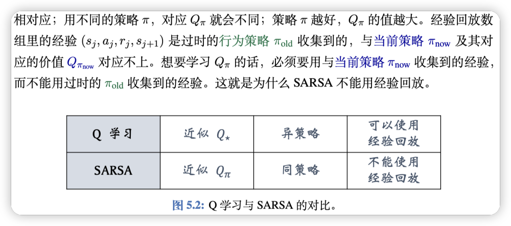
同时引入多步TD的做法，指应用连续交互m次，然后再用梯度优化，因为真实数据由一步变成了多步，更稳定效果更好。
训练流程中走n步，对前n-m步都可以用来更新梯度，最后sigma求和梯度即可。
由此看来多步TD是比较抽象化的做法，当步数确定为极端情况时，实际上有之前讨论过的含义：
补充一点上图中提到的相关概念：
由此可见，多步TD算法如果步数m选的好，可以平衡好蒙特卡洛和自举的优势，即在方差和偏差之间找到平衡点。
价值学习高级技巧
原始的方法实现DQN效果会很不理想，而想要提升表现，则需要一些tricks。
Experience Replay
some shortcoming of original DQN:
- 一条经验用过之后就discard了，it’s a waste
- 和区别很微小，且是相关的，有害的。
Prioritized Experience Replay
在replay buffer中用非均匀抽样代替均匀抽样。
因为transitions的重要性不同。
用TD error的绝对值来衡量transition的重要性，TD error越大，说明这个transition越不符合当前的Q函数，越需要被学习。
上图是常见的sample方法，因为采用了非均匀抽样，所以为了追求无偏性，我们需要对学习率也作出调整，越容易抽到，学习率越低。
同时，我们需要在buffer里动态更新权重，每次抽到计算一次后就要更新，重新按照概率分配。（第一次进入时，权重设为最大，保证尽量至少抽中一次）
Target Network & Double DQN
Problem of Overestimation
DQN更新中会遇到高估问题。
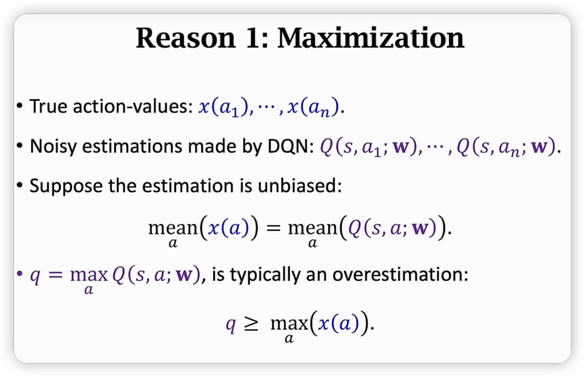
DQN是对Q函数的估计，而Q
函数本质是一个期望，即使均值相同，DQN的均值是会有误差的，而我们的转移式子里面有取max操作，误差会被计算进入更新，导致高估。依据转移式子，是高估，也高估，我们向着高估的结果调整网络，导致DQN网络的结果也高估了。
另外，Bootstraping（自举）会让已经高估的网络变得更高估：
总结一下，上述两种高估会循环传播，形成正反馈，让高估越来越严重。
Method of Target Network
另外开一个结构一样的神经网络用来计算TD target，这个网络不更新，每隔一段时间同步一次（直接用DQN参数或者加权平均）。然后用这个网络计算TD target来更新DQN，避免DQN的自举效应。
但是也有局限性，无法避免maximum带来的高估，同时无法完全独立于DQN，所以还是存在一定的自举。
Method of Double DQN
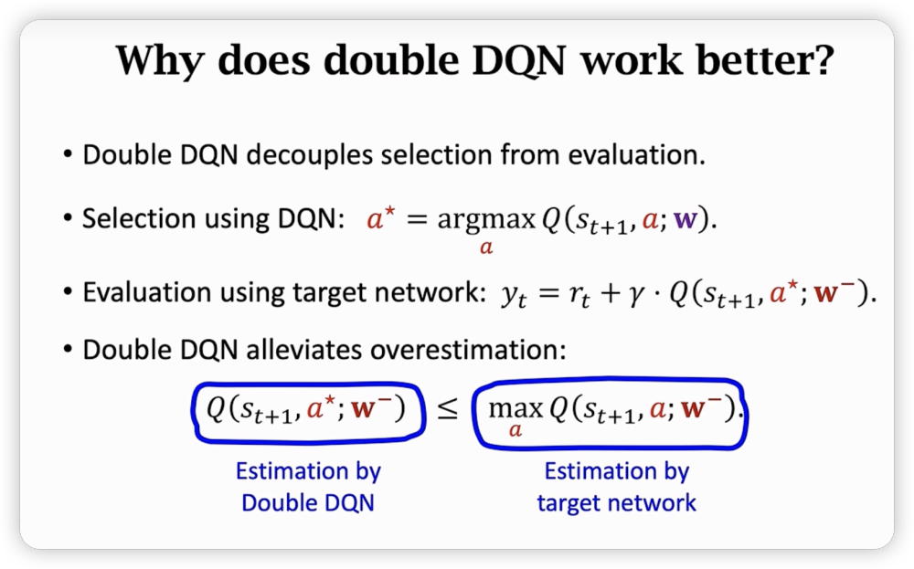
可以缓解maximum带来的高估问题。
一些对比：
Dueling Network
对神经网络结构的改进，也可以提高DQN效果。
可以看到定义了Optimal advantage function，是以状态评估作为baseline来评估不同动作的好坏。
Dueling Network的输入输出和功能和original DQN完全一样，唯一不同是结构不一样：
为什么Dueling network效果更好？
运用等式一进行训练，V和A两个神经网络可能会上下波动抵消，导致训练不稳定。
而我们补充了一个可以限制这种波动，且添加这一项对于最终收敛不会有影响（因为最后值为0）。
在实际中，把max换成mean效果更好，虽然没有理论依据。
个人感觉：把直接用神经网络估计A，变成用神经网络估计A=B+C中的B，C，同时max的性质，把B，C的关系耦合住了，训练出来B，C很接近真实值，效果比直接预测A来的更好。
Noisy Network
本质只是一个参数翻倍的参数拓展。
多引入了均值参数和方差参数，利用的正态随机性制造噪声。
在做决策的时候不需要噪声项，直接有均值作为参数就可以了。
噪声可以提升DQN的鲁棒性，对参数作出小的扰动不会让DQN偏离太大，因为我们迫使DQN在参数带噪声的情况下最小化TD error，也就迫使DQN容扔对参数的扰动。最后，只要参数在均值的领域内，DQN作出的预测都相对比较合理，而不会“失之毫厘，谬以千里”。
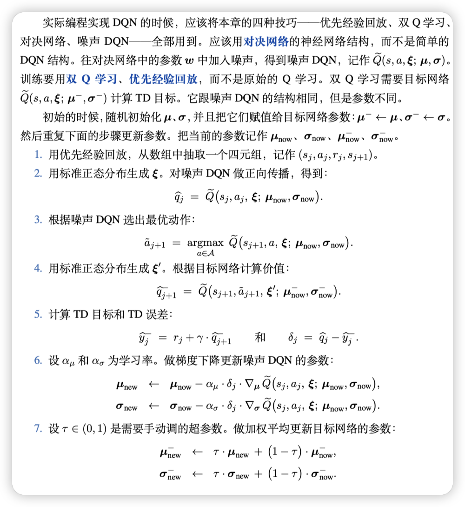
策略学习 Policy Learning
其实就是对中的求梯度。
但是发现没法求，于是有两种基础的做法；
- reinforcement 直接模拟一遍游戏，用蒙特卡洛估计去近似Q
- actor-critic 用一个神经网络去近似Q
Baseline
在策略梯度中使用baseline方法降低方差，使得收敛更快。
若b与A无关，则以下期望为0：
把上面的东西引入策略梯度：
首先，梯度期望是没有变化的，其次b是我们可以选定的值，如果选的好的话，接近Q，那么可以降低我们在蒙特卡洛近似中的方差。
我们是用蒙特卡洛近似梯度，如果单词sample得到的值小，方差变低，梯度更准确，收敛更快。
而b的选择只要与A无关即可。
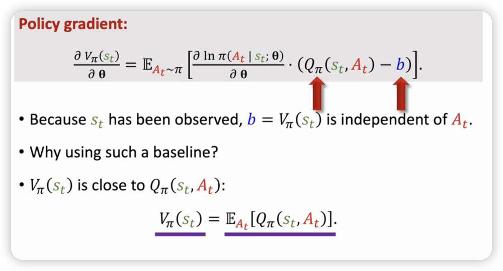
一种常见的方法是把baseline设为。与A无关且与Q接近。
reinfrorce with baseline
我们使用了三次近似来得到策略梯度：
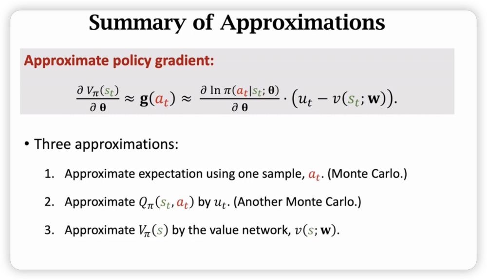
- 蒙特卡洛近似随机梯度
- reinforce用来近似Q
- 用价值网络来近似V
这样一来，我们就可以得到policy network的梯度近似，可以用来学习policy network。
同时，策略网络和价值网络输入都是状态s，它们可以共享卷积层得到特征feature，再分别经过全连接层。

简单来说，从一个时刻开始，采样到结束，获得回报，利用这个回报来计算策略网络和价值网络的梯度。
同时，从任意位置到结束都能计算出一个回报，随意一次采样可以计算n次梯度。
Advantage Actor-Critic (A2C)
同样需要两个神经网络

接下来是其的一些数学推导。
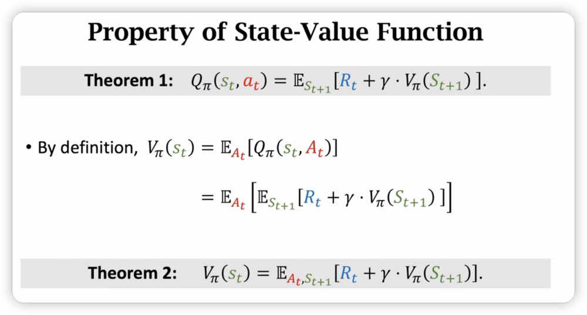
我们把Q和V都表示成了期望形式，就可以用蒙特卡洛去近似了。
在求policy Gradient的时候，我们按照套路最后减一个与无关的baseline v(s)m，与之前提高的advantage function类似。
然后把Q用近似处理成V，V又都可以用神经网络近似。
接下来是用TD算法更新价值网络。
一点点总结：
在做策略梯度时，梯度的右边其实也是依靠价值网络来评估当前动作的好坏，而这个差，就是优势函数，评估了当前动作的好坏。
为了训练策略网络，我们用价值网络评估相邻两个状态来评价动作的好坏，然后告诉策略网络。
训练价值网络，我们需要用到状态s和奖励r，利用TD算法来让价值网络的预测越来越准。
Reinfoce versus A2C
同：
- 都需要两套一样的神经网络
异：
- 价值网络的功能不一样，reinforce只是用来预测baseline来降低预测方差，A2C用作critic用来评价actor的表现。
用multi-step TD效果更好。
而当m=n时，A2C和reinforce就是一模一样了。
策略优化高级技巧
Trust Region Policy Optimization (TRPO)
总体思路其实相当朴素，在置信域里近似，用近似函数最优解去迭代更新。
为了应用这个思路，我们对函数做一个变形：
最后对TRPO的总结：
只有最后一步需要hyperparameter，一个是学习率，一个是置信域。好消息是即使hyperparameter选的不好，也不太会影响最后的表现。
和传统策略梯度算法的对比：
Entropy Regularization
我们不希望策略函数都集中在个别选择上，我们希望策略函数给出的选择的概率不是那么确定，这样可以鼓励agent去探索新的方法。
于是，我们可以运用熵（Entropy）来衡量概率分布的不确定性。
自然地，我们把所有状态的熵的期望作为正则项加入目标函数里面：
连续控制问题
传统的DQN可以解决离散动作问题，但是如果动作空间有无限个，那么DQN就无法解决了。
- Discretization
如果维度（自由度）很大，那么离散化后点成指数级别增长，不太适用。
Deterministic Policy Gradient
注意这里action输出项和维度相同，每个维度只输出一个具体动作。
每次看到一条训练数据
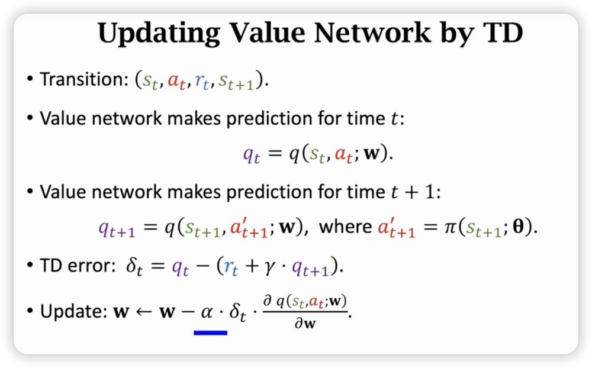
上图更新价值函数，接下来还需要更新策略网络。（需要价值网络帮忙）
此时的价值网络评估的是当前动作a有多好。所以我们需要训练策略网络的参数改变输出的action来使得价值网络输出越大越好。
然后我们需要计算DPG（确定性策略梯度），也就是value netwrok的输出对策略网络参数的梯度。
然后利用链式法则拆开。
还可以利用target network改进价值网络的训练。（booatstrapping会造成偏差（高的越高，低的越低，用不同的升级网络计算TD target尽量避免偏差）
target network的更新也和原来参数有关，只是起到缓解的作用。
然后之前讲到的improvements方法都可以继续使用。
和Stochastic policy的比较：(确定性体现在Output的是确定的action a，控制的时候也是直接使用a，这样就可以用在连续控制了)
Stochastic Policy for Continuous Control
用正态分布去拟合n维的动作空间。
然后用神经网络近似均值，方差对数
连续控制的流程：
对于状态s，通过神经网络得到mean和std，然后正态采样得到动作a。
Training policy network
- Training：Auxiliary Network

相当于给定s，a和参数就可以映射到一个实数f(s,a:)上，利用f去估算策略梯度。
未知的可以用之前的reinforce或者A2C来近似。
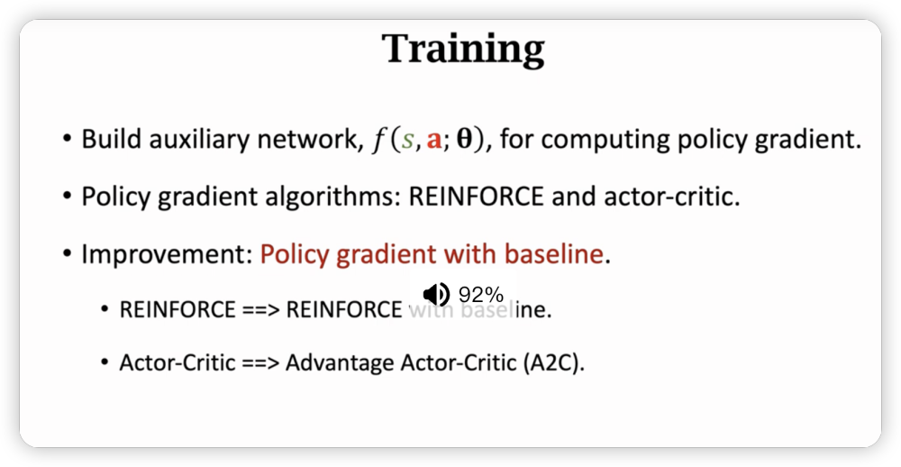
状态的不完全观测问题
模拟人类，当人类观测不了全部状态后，会利用历史看过的所有已知状态协助推理，这启示我们把所有看过的状态丢进神经网络去拟合。
具体而言，需要用到RNN来处理。
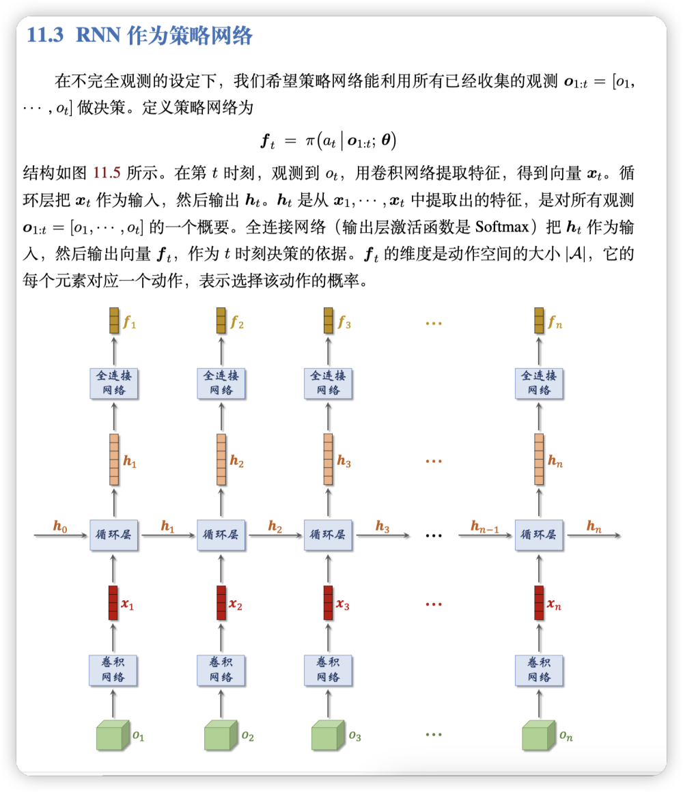
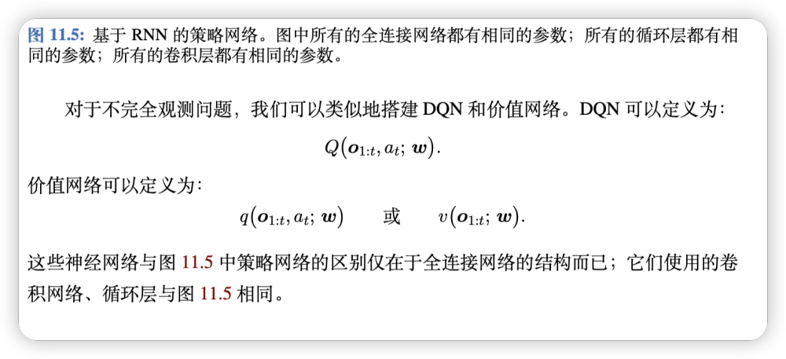
当然，也可以attention去优化，使用更多的参数和更好的架构，能获得更好的性能。
模仿学习
模仿学习 (Imitation Learning) 不是强化学习，而是强化学习的一种替代品。模仿学习与强化学习有相同的目的：两者的目的都是学习策略网络，从而控制智能体。模仿学习与强化学习有不同的原理：模仿学习向人类专家学习，目标是让策略网络做出的决策与人类专家相同；而强化学习利用环境反馈的奖励改进策略，目标是让累计奖励（即回报）最大化。
行为克隆
行为克隆 (Behavior Cloning) 是最简单的模仿学习。行为克隆的目的是模仿人的动作，学出一个随机策略网络 π(a|s; θ) 或者确定策略网络 µ(s; θ)。虽然行为克隆的目的与强化学习中的策略学习类似，但是行为克隆的本质是监督学习（分类或者回归），而不是强化学习。 行为克隆通过模仿人类专家的动作来学习策略，而强化学习则是从奖励中学习策略。
用准备好的（状态，动作）二元组训练分类器，然后用分类器来预测动作。
对于连续控制问题，用二范式作为loss；对于离散控制问题，用交叉熵作为loss。所以行为克隆本质时监督学习，不需要域环境的交互。
行为克隆训练出的策略网络通常效果不佳。人类不会探索奇怪的状态和动作，因此
数据集上的状态和动作缺乏多样性。在数据集上做完行为克隆之后，智能体面对真实的环境，可能会见到陌生的状态，智能体的决策可能会很糟糕。行为克隆存在“错误累加” 的缺陷。
强化学习效果通常优于行为克隆。如果用强化学习，那么智能体探索过各种各样的状态，尝试过各种各样的动作，知道面对各种状态时应该做什么决策。智能体通过探索，各种状态都见过，比行为克隆有更多的“人生经验”，因此表现会更好。强化学习在围棋、电子游戏上的表现可以远超顶级人类玩家，而行为克隆却很难超越人类高手。
强化学习的一个缺点在于需要与环境交互，需要探索，而且会改变环境。举个例子，假如把强化学习应用到手术机器人，从随机初始化开始训练策略网络，至少要致死、致残几万个病人才能训练好策略网络。假如把强化学习应用到无人车，从随机初始化开始训练策略网络，至少要撞毁几万辆无人车才能训练好策略网络。假如把强化学习应用到广告投放，那么从初始化到训练好策略网络期间需要做探索，投放的广告会很随机，会严重降低广告收入。如果在真实物理世界应用强化学习，要考虑初始化和探索带来的成本。
行为克隆的优势在于离线训练，可以避免与真实环境的交互，不会对环境产生影响。假如用行为克隆训练手术机器人，只需要把人类医生的观测和动作记录下来，离线训练手术机器人，而不需要真的在病人身上做实验。尽管行为克隆效果不如强化学习，但是行为克隆的成本低。可以先用行为克隆初始化策略网络，而不是随机初始化，然后再做强化学习，这样可以减小对物理世界的有害影响。
逆向强化学习(Inverse Reinforcement Learning)
逆向强化学习 (Inverse Reinforcement Learning，缩写 IRL) 非常有名，但是在今天已经不常用了。下一节介绍的 GAIL 更简单，效果更好。
生成判别模仿学习（GAIL）
生成判别模仿学习 (Generative Adversarial Imitation Learning，缩写 GAIL) 需要让智能体与环境交互，但是无法从环境获得奖励2。GAIL 还需要收集人类专家的决策记录（即很多条轨迹）。GAIL 的目标是学习一个策略网络，使得判别器无法区分一条轨迹是策略网络的决策还是人类专家的决策。
生成器 判别器 定义
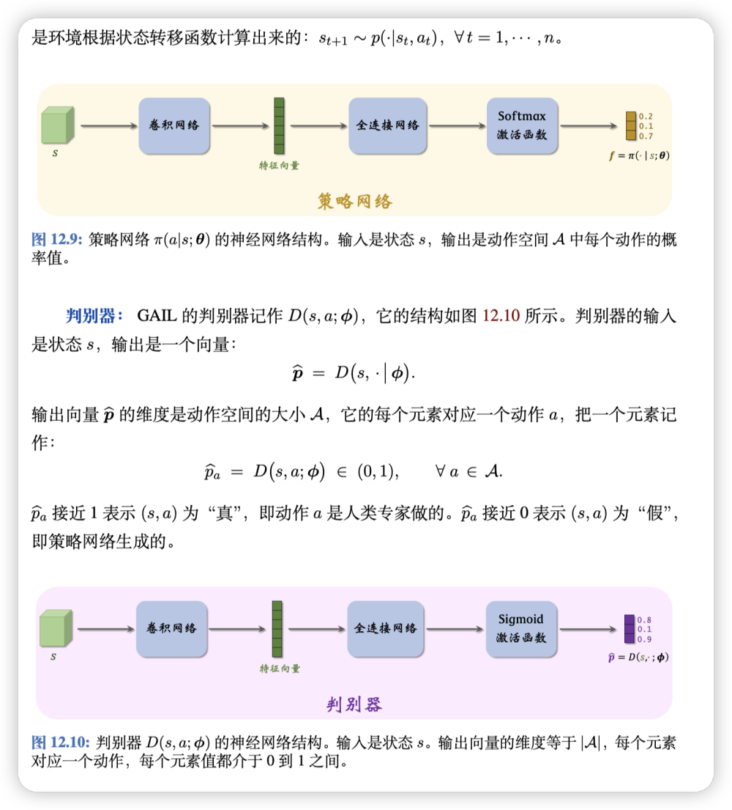
GAIL的训练
用置信域算法优化生成器的参数。
用true和fake策略函数抽样有多条路径后，分别对每一时刻s，a组成标签对，利用交叉熵loss进行梯度下降，更新判别器参数。
总的流程：
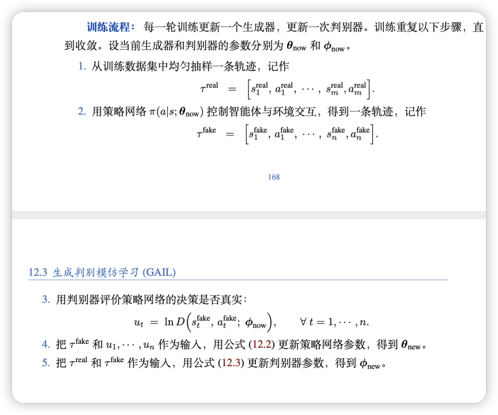
多智能体强化学习
多agent判断收敛的条件是纳什均衡：
- 其他agent不变，当前agent无法靠改变自己的策略来提升自己的收益。
- 所以在纳什均衡下，没有人会改变自己的策略，因为改变策略没有收益。就达到平衡了。
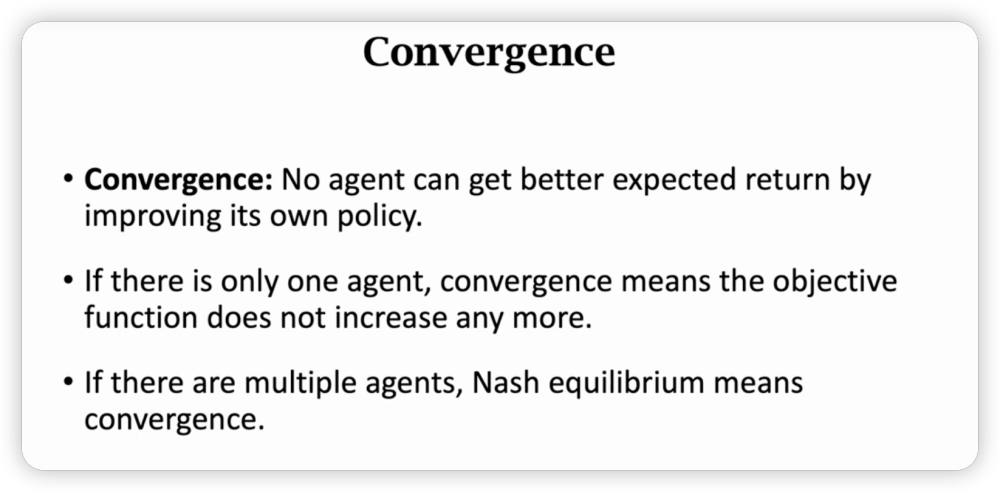
SinglAgent Policy Gradient for MARL
直接用单agent策略学习大概率无法收敛。
这个agent各自更新自己的目标函数，所有的agent都在不停改变自己，所以不会收敛。
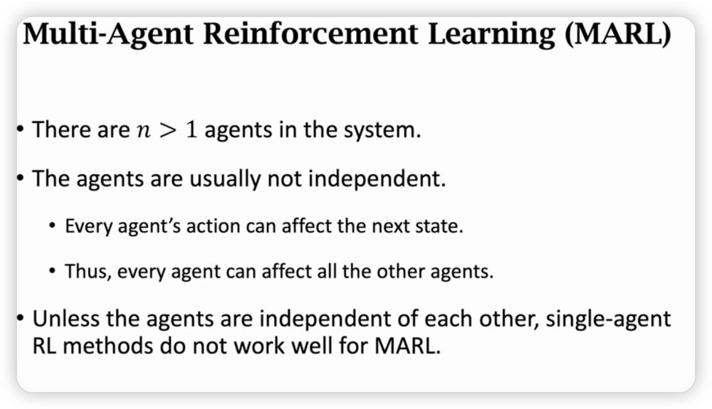
Centralized VS Decentralized
还有一个不完全观测问题：
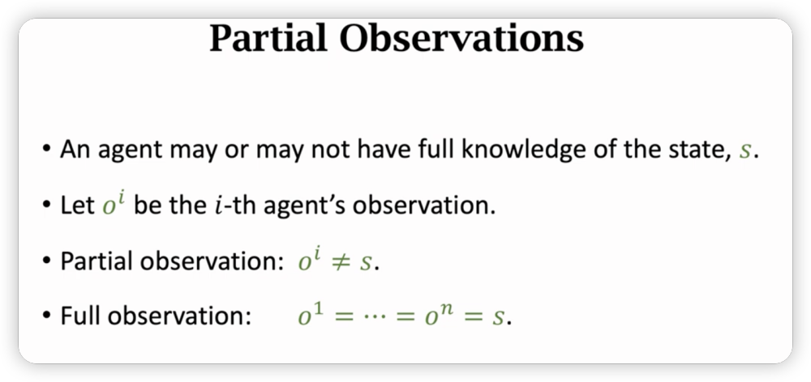
Fully Decentralized Training
每一个Agent都是独立的，和single Agent没有区别。
但是不应该忽视Agent间相互的影响，所以效果不好，甚至无法收敛。
Fully Centralized Training
每个Agent自身没有网络，Agent把观测状态和奖励上报，并统一受中央控制器控制行动。
在execution时，每个agent的行动受中央控制器独立的神经网络控制。（不同agent的神经网络是不同的）
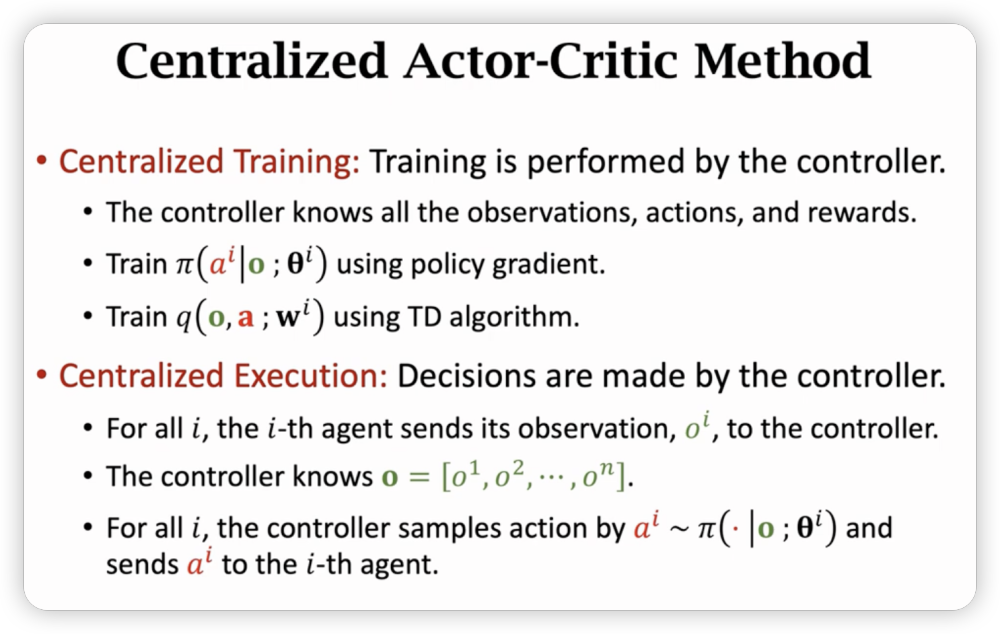
中心化的好处是可以利用全局信息，可以帮助所有agent做出好的决策。
但是也有shortcoming：
一言以蔽之，就是慢，做什么都要交流，同步，无法实时决策。
Centralized Traing with Decentralized Execution
训练时需要中央控制器，决策再各自决策。
训练的时候，需要agent接受状态o和奖励r，自己决定动作a，然后把这些信息上报给中央控制器：
中央控制器上有n个价值网络，训练第i个价值网络，需要用到所有的a，所有的o，但只用第i个，使用TD算法训练：
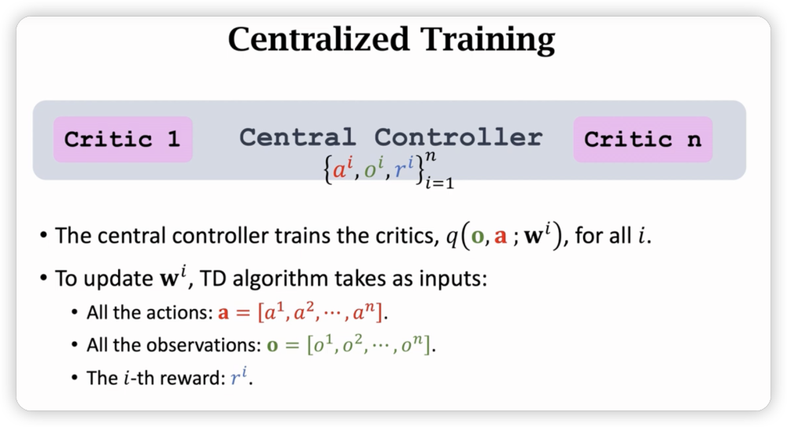
训练好了价值网络后，把对应的价值估测值发给对应的agent，然后各个agent单独训练自己的策略网络，此时input只有，其中是在中央控制器上训练好的，融合了其他agent的信息。注意这样训练不需要其他agent的观测值和动作，可以在各个agent上本地训练。
在execution部分，不需要中央控制器的价值网络了，每个Agent根据自己的决策网络走就可以了。
总的训练-执行流程：
最后提一嘴Parameter Sharing的问题。
要取决于不同的应用，比如功能一样的无人车，可以共享参数。
完全合作关系
MAC-A2C 属于 Actor-Critic 方法：策略网络 相当于第 i 个运动员，负责做决策；价值网络$ v(S; w)$ 相当于评委，对运动员团队的整体表现予以评价，反馈给整个团队一个分数。
-
训练价值网络：
如上图，价值网络的训练是常规的TD算法，只需要就可以计算价值网络梯度。 -
训练策略网络：

整套训练&决策流程：
一些待解决的问题：
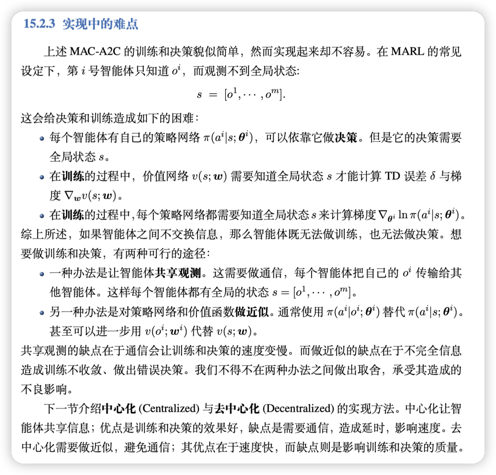
非完全合作关系
纳什均衡作为收敛条件：
评价策略熟优熟劣的指标：
网络的定义：
中心化训练 + 去中心化决策
连续控制与MADDPG
注意：更新策略网络只用了经验回滚数组四元组中的。
训练价值网络用经验回放数组，利用策略函数去做TD算法更新。
中心化训练
为了训练第 号策略网络和第 号价值网络，我们需要用到如下信息：从经验回放数组中取出的 、、、、所有 个策略网络、以及第 号价值网络。很显然，一个智能体不可能有所有这些信息，因此 MADDPG 需要“中心化训练”。
中心化训练的系统架构如图 16.6 所示。有一个中央控制器，上面部署所有的策略网络和价值网络。训练过程中，策略网络部署到中央控制器上，所以智能体不能自主做决策，智能体只是执行中央控制器发来的指令。由于训练使用异策略，可以把收集经验和更新神经网络参数分开做。
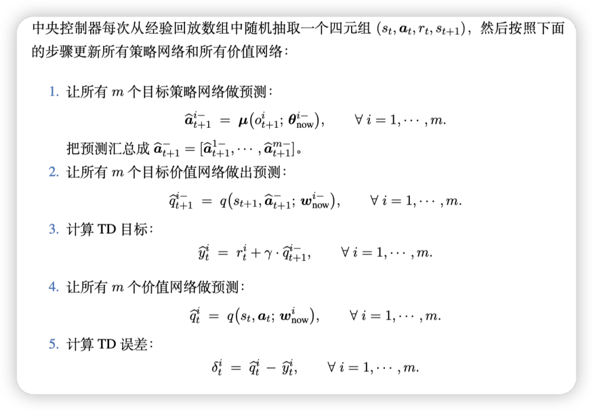

注意力机制&多智能体强化学习
传统暴力concat观测状态的缺点：
我们可以对多个agent观测到的m个状态进行多头注意力机制，依靠注意力机制预测价值函数。
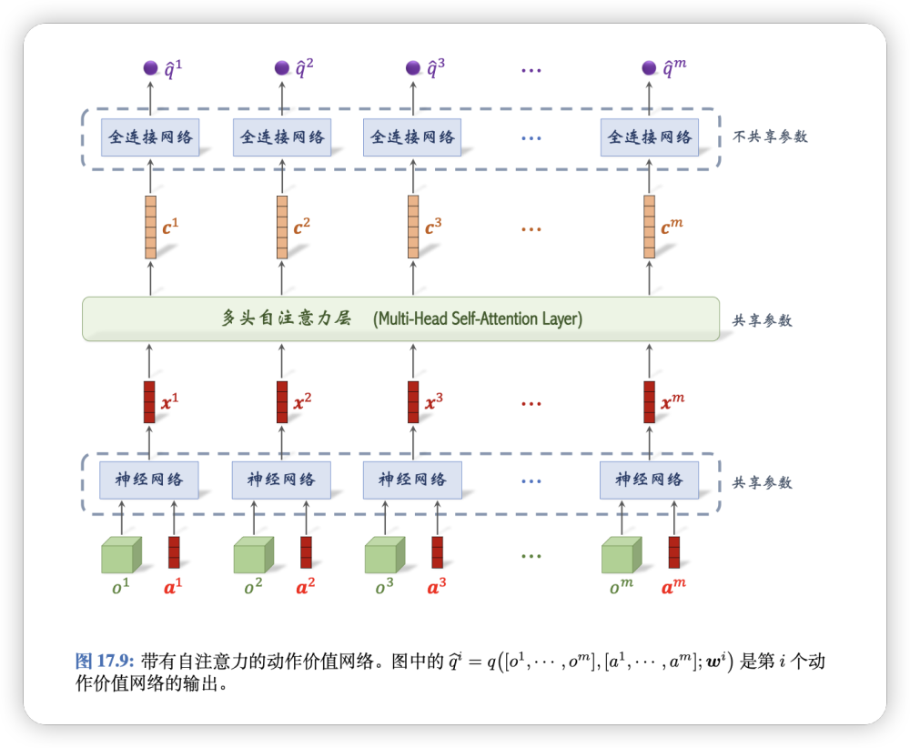
m个动作价值网络用一个神经网络实现了。
中心化策略网络也可以用注意力机制实现。
Summary
总结：自注意力机制在非合作关系的 MARL 中普遍适用。如果系统架构使用中心化训练，那么 m 个价值网络可以用一个神经网络实现，其中使用自注意力层。如果系统架构使用中心化决策，那么 m 个策略网络也可以实现成一个神经网络，其中使用自注意力层。在 m 较大的情况下，使用自注意力层对效果有较大的提升。
强化学习在现实世界中的应用
SQL语句翻译
推荐系统
强化学习推荐系统的一个难点在于探索过程的代价很大；此处的代价不是计算代价，而是实实在在的金钱代价。强化学习要求智能体（即推荐系统）与环境（即用户）交互，用收集到的奖励更新策略。如果直接把一个随机初始化的策略上线，那么在初始探索阶段，这个策略会做出纯随机的推荐，严重影响用户体验，导致点击、观看、购买数量暴跌，给公司业务造成损失。在上线之前，必须在线下用历史数据初步训练策略。最简单的方法是在线下用监督学习的方式训练策略网络，这很类似传统的深度学习推荐系统。阿里巴巴提出的“虚拟淘宝”系统 模仿人类用户，得到很多虚拟用户，把这些虚拟用户作为模拟器的环境。把推荐系统作为智能体，让它与虚拟用户交互，利用虚拟的交互记录来更新推荐系统的策略。等到在模拟器中把策略训练得足够好，再让策略上线，与真实用户交互，进一步更新策略。
网约车调度
强化学习与监督学习对比
-
决策是否改变环境
-
探索未知动作
-
长线回报
强化学习被制约的原因
- 所需样本量太大
- 探索阶段代价太高，手术、自动驾驶、广告投放不允许初期的大量失败
- 超参数影响很大
- 稳定性差